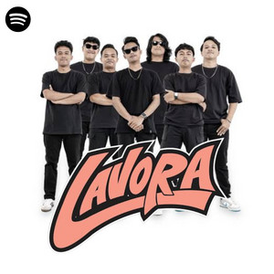
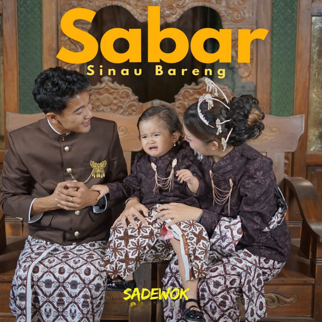

|
MENDENGARKAN MUSIK
Koleksi Genre Musik & Momen Santai |
Kumpulan penyanyi yang musiknya sering kudengar
Musik menemani berbagai aktivitas harian saya.
(Petunjuk: Foto di bawah ini bisa dipencet/diklik untuk melihat ukuran penuh)
1. Ajeng Febria
Penyanyi wanita yang identik dengan lagu Jawa. |
2. NDX AKA Duo penyanyi dengan penggemar yang begitu banyak. |
|
3. Lavora  Band dengan nada vokalnya sendiri. |
4. Ndarboy Genk Penyanyi solo dengan musik pop Jawanya. |
|
5. Denny Caknan Penyanyi lagu Jawa dari Jawa Timur yang bergenre pop dan koplo. |
6. Sadewok  Penyanyi solo sekaligus anggota Polda DIY. |


| « Kembali ke Album | | | Kembali ke Halaman Hobi » |